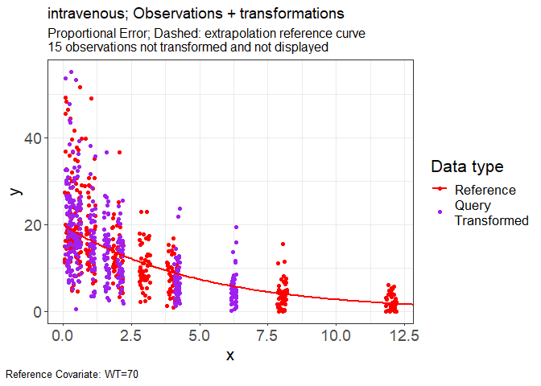
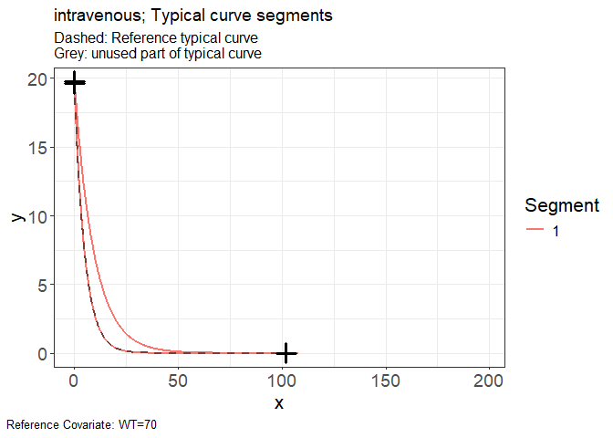

A method to visualize PKPD analyses which are impacted by covariate effects. Variability-Aligned Covariate Harmonized-Effects and Time-Transformation Equivalent (VACHETTE) facilitates intuitive overlays of data and model predictions, allowing for comprehensive comparison without dilution effects. VACHETTE improves upon previous methods V2ACHER, enabling its application to all pharmacometric models and enhancing Visual Predictive Checks (VPC) by integrating data into cohesive plots that can highlight model misspecifications.
Development
remotes::install_github("certara/vachette")Released
install.packages("vachette")Usage
For a full overview of vachette, visit the following tutorial link: https://certara.shinyapps.io/vachette
Import Data
The minimal required inputs for vachette are two data.frame objects: the observed (obs.data) and simulated predictions of typical curves (typ.data).
The user also has the option to include simulated data (sim.data), in order to derive transformations needed for a VACHETTE VPC. The sim.data requires the same columns as obs.data, in addition to a required REP column to indicate the replicate number. Learn more about data requirements here.
Data files:
- iv-obs.csv
- iv-typ-minmax.csv
obs <- read.csv(system.file(package = "vachette", "examples", "iv-obs.csv"))
typ <- read.csv(system.file(package = "vachette", "examples", "iv-typ-minmax.csv"))Vachette Transformations
Generate transformations for obs.data and sim.data
library(vachette)
vd <-
vachette_data(
obs.data = obs,
typ.data = typ,
covariates = c(WT=70),
mappings = c(x = "time",
OBS = "DV"),
model.name = "intravenous"
) |>
apply_transformations()Vachette Plot
Generate vachette plots
p.obs.ref.query(vd) 
p.vachette(vd)

p.scaling.factor(vd)

p.obs.excluded(vd)[]vignettes/img/readme-plots-6.png)
View excluded observations
vd$obs.excluded## # A tibble: 15 × 15
## REP ID x OBS dosenr WT COV region region.type ucov y
## <dbl> <int> <dbl> <dbl> <int> <int> <chr> <int> <chr> <dbl> <dbl>
## 1 1 3 0.0743 25.9 1 30 30 1 open 1 25.9
## 2 1 10 0.0920 2.26 1 30 30 1 open 1 2.26
## 3 1 12 0.0739 25.6 1 30 30 1 open 1 25.6
## 4 1 21 0.0830 10.0 1 30 30 1 open 1 10.0
## 5 1 40 0.0559 9.26 1 30 30 1 open 1 9.26
## 6 1 48 0.0547 18.3 1 30 30 1 open 1 18.3
## 7 1 52 0.0997 16.2 1 70 70 1 open 2 16.2
## 8 1 57 0.0749 11.2 1 70 70 1 open 2 11.2
## 9 1 61 0.0961 36.7 1 70 70 1 open 2 36.7
## 10 1 67 0.0538 11.9 1 70 70 1 open 2 11.9
## 11 1 78 0.0711 11.5 1 70 70 1 open 2 11.5
## 12 1 90 0.0579 15.0 1 70 70 1 open 2 15.0
## 13 1 91 0.0862 45.6 1 70 70 1 open 2 45.6
## 14 1 93 0.0828 49.2 1 70 70 1 open 2 49.2
## 15 1 95 0.0651 27.4 1 70 70 1 open 2 27.4
## # ℹ 4 more variables: ref <chr>, exclude <dbl>, PRED <dbl>, reason <chr>